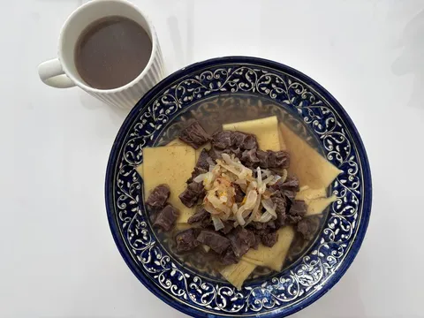
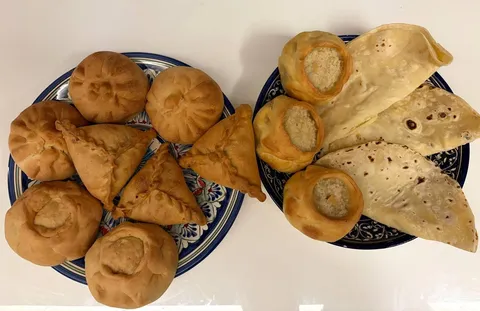
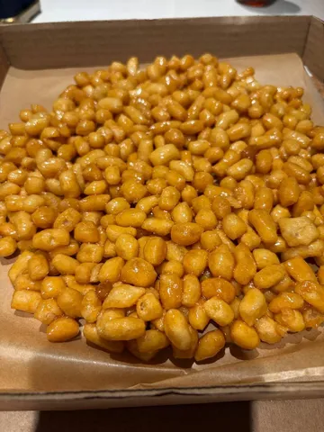
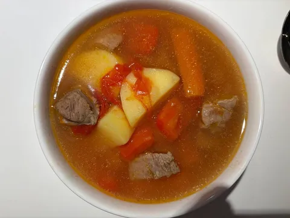

Геокулинарные эксперименты продолжаются. И в барабане кроме государств есть и некоторые регионы с особенной кухней. Самый яркий их представитель - Татарстан.
Во главе угла - мясо и тесто, как наследие кочевого образа жизни во многовековой истории региона. А торговые связи с Востоком обогатили кухню специями и сладостями. Потому и кухня - яркая и сытная.
Занимательный кулинарный факт - столь любимый мной тартар хоть и появился во Франции, имеет татарские корни - европейцы подсмотрели у татар идею класть сырое мясо под седло лошади, а потом есть сырым с солью. Но к актуальной татарской кухне его не отнести, поэтому на нашем столе были другие яства:
- азу по-татарски - ничего сверхестественного, но вкусно, а что там может быть не так;
- выпечка в составе эчпочмака, элеша, вак-бэлиша, вак-губардии и кыстыбыя - кайф;
- бешбармак - то ли суп, то ли второе, не важно - бульон, мясо, лук и лапша, наваристо и вкусно;
- шурпа - просто и эффективно, особенно если есть хорошая баранина;
- и непременный чак-чак, куда ж без него.
Итого, лайк.



